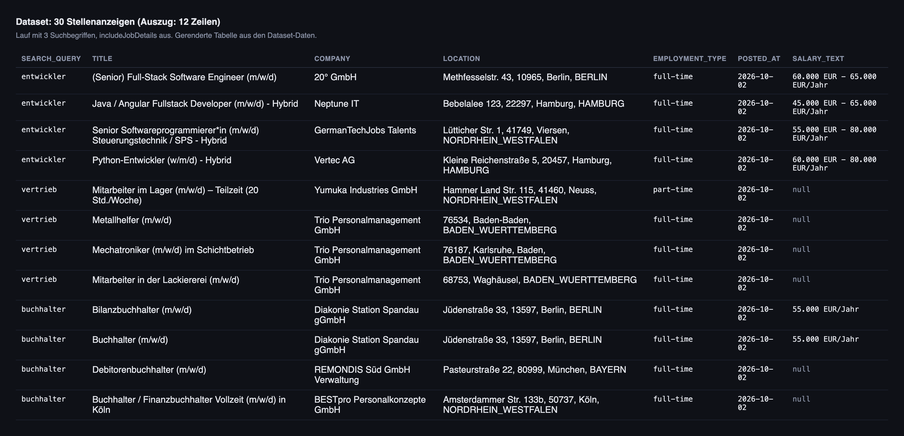
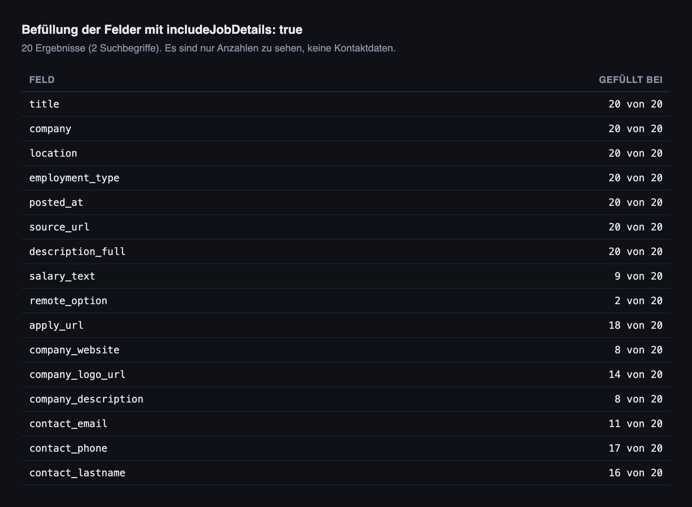

Arbeitsagentur Scraper: Stellenanzeigen als Tabelle exportieren
Du suchst Stellenanzeigen von arbeitsagentur.de und willst sie in Excel oder in eine eigene Auswertung bekommen? Der Arbeitsagentur.de Scraper holt die Anzeigen zu deinen Suchbegriffen und liefert sie als Tabelle: Titel, Arbeitgeber, Ort, Datum, Gehalt (wenn angegeben) und Link zur Anzeige. Ohne Code, in wenigen Minuten.

In diesem Tutorial
Das bekommst du
Die Jobbörse der Bundesagentur für Arbeit hat keine Export-Funktion für Stellenanzeigen. Der Arbeitsagentur-Scraper holt die Anzeigen zu deinen Suchbegriffen und legt sie als Tabelle ab, die du als CSV, Excel oder JSON herunterladen kannst. Ein Ergebnis sieht so aus (gekürzt, aus einem echten Lauf):
{
"id": "17338-6a3c9597a4726523f0-S",
"title": "(Senior) Full-Stack Software Engineer (m/w/d)",
"company": "20° GmbH",
"location": "Methfesselstr. 43, 10965, Berlin, BERLIN",
"country": "DE",
"salary_min": 60000,
"salary_max": 65000,
"salary_currency": "EUR",
"salary_period": "yearly",
"salary_text": "60.000 EUR - 65.000 EUR/Jahr",
"employment_type": "full-time",
"posted_at": "2026-10-02T00:00:00.000Z",
"source_url": "https://www.arbeitsagentur.de/jobsuche/jobdetail/17338-6a3c9597a4726523f0-S",
"source_platform": "arbeitsagentur.de",
"search_query": "entwickler",
"scraped_at": "2026-10-02T09:52:26.624Z"
}Zu jeder Anzeige bekommst du Titel, Arbeitgeber, Ort, Beschäftigungsart, Veröffentlichungsdatum, den Link zur Originalanzeige und, wenn die Anzeige eine Angabe enthält, das Gehalt. Mit der Option includeJobDetails kommen der vollständige Anzeigentext, Bewerbungslink, Firmenwebsite und Kontaktangaben dazu (mehr dazu weiter unten).
salary_text leer (null). Das Feld ist nur gefüllt, wenn der Arbeitgeber das Gehalt in der Anzeige angibt.Apify-Konto anlegen
- Öffne die Seite des Arbeitsagentur-Scrapers auf Apify.
- Klicke auf Try for free und registriere dich mit Google oder E-Mail.
- Du landest in der Apify Console im Tab Input des Actors. Für kleine Läufe reicht das monatliche Gratis-Guthaben des Free-Plans.
Suchbegriffe und Filter eintragen
Im Feld searchQueries trägst du ein oder mehrere Suchbegriffe ein, so wie du sie auf arbeitsagentur.de im Feld „Was“ eingeben würdest. Jeder Begriff läuft als eigene Suche, doppelte Anzeigen werden über alle Begriffe hinweg entfernt. Als Beispiel haben wir diesen Input benutzt:
{
"searchQueries": [
"entwickler",
"vertrieb",
"buchhalter"
],
"maxResults": 30,
"maxResultsPerQuery": 10,
"sortBy": "newest",
"includeJobDetails": false
}maxResultsPerQuery: Obergrenze pro Suchbegriff (Standard 100).maxResults: Obergrenze über alle Suchbegriffe zusammen (0 heißt unbegrenzt).sortBy:newestsortiert nach Veröffentlichungsdatum, die neuesten zuerst.relevancenutzt die Standard-Sortierung der Plattform. Für regelmäßige Abrufe istnewestsinnvoll.
maxResults auf 10 bis 30. So siehst du in einer Minute, ob die Treffer zu deinem Suchbegriff passen, und zahlst nur wenige Cent.Actor starten und Ergebnis ansehen
Klicke unten auf Save and Run. Auf der Lauf-Seite siehst du im Tab Log den Fortschritt, im Tab Dataset die Ergebnisse. Der Beispiellauf mit drei Suchbegriffen und 30 Anzeigen war nach rund 42 Sekunden fertig.
titleFilter (kommagetrennte Wörter, die im Titel vorkommen müssen) grenzt du das ein.Daten exportieren
- Öffne im Lauf den Tab Dataset.
- Klicke auf Export.
- Wähle das Format: CSV, Excel, JSON und weitere stehen zur Auswahl. Mit der Feld-Auswahl kannst du nur die Spalten exportieren, die du brauchst.
Volltext und Kontaktangaben mit includeJobDetails
Setzt du includeJobDetails auf true, ruft der Actor zusätzlich die Detailseite jeder Anzeige ab. Dort stehen die Kontaktangaben. Das dauert pro Anzeige einige Sekunden länger und wird als eigenes Ereignis abgerechnet (siehe Kosten). Input des Beispiellaufs:
{
"searchQueries": [
"Pflegefachkraft",
"Softwareentwickler"
],
"maxResults": 20,
"maxResultsPerQuery": 10,
"postedWithinDays": 7,
"sortBy": "newest",
"includeJobDetails": true
}Der Lauf lieferte 20 Anzeigen und dauerte rund 101 Sekunden. Die Tabelle zeigt, wie viele der 20 Ergebnisse ein Feld enthalten. Wie viel gefüllt ist, hängt von der jeweiligen Anzeige ab:

includeJobDetails aus.Filter: Bundesland, Zeitraum, Homeoffice
Diese Filter werden bei der Arbeitsagentur angewendet, bevor Ergebnisse zurückkommen:
bundesland: Kürzel des Bundeslands, zum BeispielBY(Bayern) oderNW(Nordrhein-Westfalen). Leer lässt alle zu.location: Stadt, Region oder Gebiet als Text, zum Beispiel „München“.postedWithinDays: nur Anzeigen der letzten N Tage (7 = eine Woche, 14 = zwei Wochen). 0 schaltet den Filter ab.employmentType:FULL_TIME,PART_TIME,INTERNSHIP,APPRENTICESHIP,CONTRACT.remotePercentageMin: Mindestanteil Homeoffice, 100 für komplett remote.directUrls: einzelne Anzeigen-Links, um zu prüfen, ob sie noch online sind.
Per API und automatisch abrufen
Du kannst den Actor auch aus eigenen Skripten, n8n oder Make aufrufen. Dieser Aufruf startet einen Lauf und gibt die Ergebnisse direkt zurück (Apify-Endpunkt run-sync-get-dataset-items):
curl -X POST "https://api.apify.com/v2/acts/santamaria-automations~arbeitsagentur-de-scraper/run-sync-get-dataset-items?token=DEIN_APIFY_TOKEN" \
-H "Content-Type: application/json" \
-d '{"searchQueries": ["Pflegefachkraft"], "bundesland": "NW", "postedWithinDays": 7, "maxResults": 50}'Deinen API-Token findest du in der Apify Console unter Settings → API & Integrations. Für Jobs, die täglich laufen sollen, kannst du in der Console unter Schedules einen Zeitplan anlegen und postedWithinDays auf 1 oder 2 setzen, damit du nur neue Anzeigen bekommst.
Was das kostet
Der Actor rechnet pro Ereignis ab (Preise laut Apify-Seite des Actors, Stand 14.10.2026):
- Actor-Start: 0,05 $ pro Lauf (je GB Speicher ein Ereignis, mindestens eines).
- Anzeige aus der Trefferliste (SERP): 0,008 $ pro Ergebnis.
- Anzeige mit Detailseite (includeJobDetails): 0,02 $ pro Ergebnis.
Das ergibt für die Beispielläufe: 30 Anzeigen aus der Trefferliste = 0,05 $ + 30 x 0,008 $ = 0,29 $. 20 Anzeigen mit Details = 0,05 $ + 20 x 0,02 $ = 0,45 $.
Wofür Leute die Daten nutzen
Stellenmarkt beobachten
Lass täglich die neuesten Anzeigen zu einem Beruf laufen und zähle, wie viele pro Woche dazukommen, oder welche Arbeitgeber am häufigsten suchen.
Eigene Jobliste oder Stellenportal füttern
Über source_url verlinkst du auf die Originalanzeige. Mit sortBy newest und postedWithinDays holst du nur Neues.
Arbeitgeber finden
Mit includeJobDetails bekommst du, wenn vorhanden, die Firmenwebsite des Arbeitgebers. Das hilft für Recherche zu Firmen, die gerade einstellen.
Häufige Fragen
Brauche ich Programmierkenntnisse für den Arbeitsagentur-Scraper?
Nein. In der Apify Console füllst du ein Formular aus, klickst auf Save and Run und lädst die Tabelle herunter. Code brauchst du nur, wenn du den Actor per API in ein eigenes System einbauen willst.
Welche Daten bekomme ich von arbeitsagentur.de?
Titel, Arbeitgeber, Ort, Beschäftigungsart, Veröffentlichungsdatum, Link zur Originalanzeige und, falls angegeben, das Gehalt. Mit includeJobDetails kommen Volltext, Bewerbungslink, Firmenwebsite und Kontaktangaben dazu, soweit die Anzeige sie enthält.
Warum ist das Gehaltsfeld bei manchen Anzeigen leer?
Weil viele Anzeigen kein Gehalt nennen. Im Beispiellauf mit 30 Anzeigen hatten 15 eine Angabe.
Was kostet der Arbeitsagentur-Scraper?
Pro Lauf 0,05 $ Startgebühr, dazu 0,008 $ pro Anzeige aus der Trefferliste oder 0,02 $ pro Anzeige mit Detailseite. Die aktuellen Preise stehen auf der Apify-Seite des Actors.
Wie bekomme ich nur neue Anzeigen?
Setze sortBy auf newest und postedWithinDays auf die Anzahl Tage seit deinem letzten Lauf. Mit einem Zeitplan in der Apify Console läuft das automatisch.
Darf ich die Daten verwenden?
Das hängt von deinem Anwendungsfall ab, besonders bei Kontaktangaben von Personen. Prüfe das für deinen Fall, bevor du Daten speicherst oder weiterverwendest.
Weiterführende Links
- Arbeitsagentur.de Scraper, Actor-Seite: Alle Eingabefelder, Ausgabefelder und Preise im Überblick.
- Arbeitsagentur.de Scraper auf Apify: Der Actor mit Dokumentation und allen Parametern.
- How to Scrape Every Job Online (Englisch): Stellenanzeigen aus vielen Quellen mit einem Aufruf.